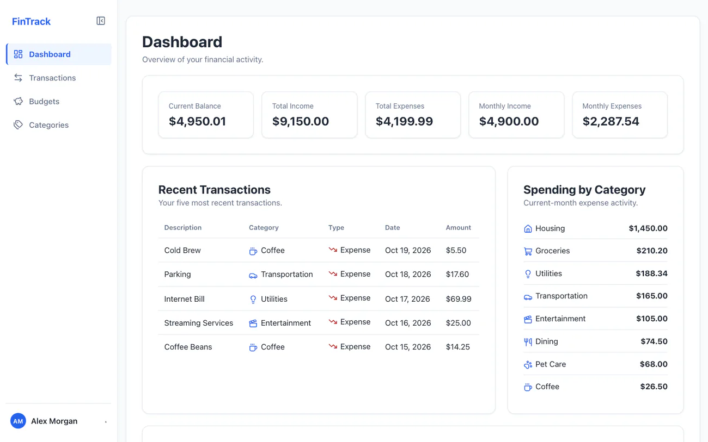

Full-Stack Application
FinTrack
A production-deployed personal finance application built with Java, Spring Boot, React, TypeScript, and MySQL. FinTrack provides secure, user-scoped transaction, budget, and category management with financial analytics and a responsive dashboard, deployed across Vercel and Railway.
- Short-lived JWTs with rotating refresh-token sessions
- Transaction CRUD, filtering, sorting, and pagination
- Monthly budgets and custom categories with spending analytics
- Profile photos via Cloudinary and uptime monitoring
- 2,300+ automated tests, including MySQL integration tests